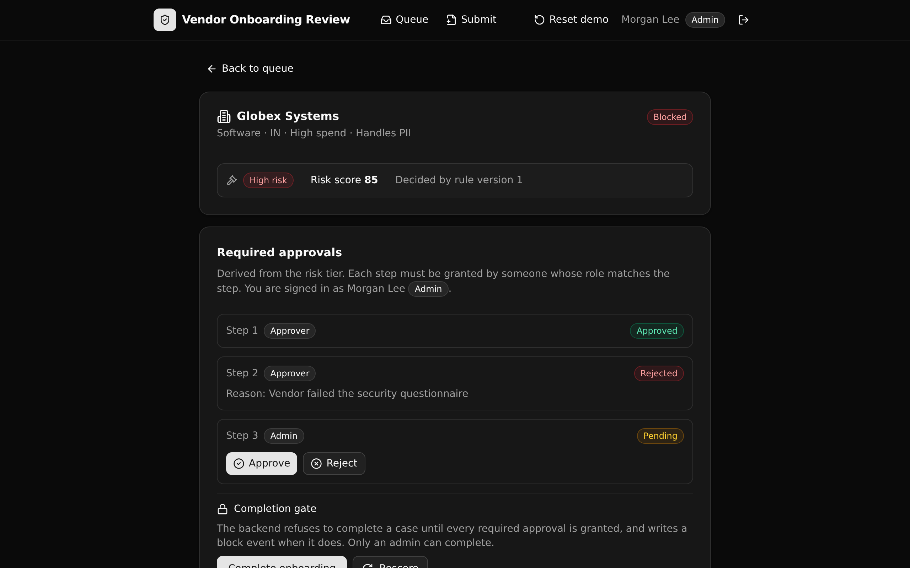

A governed procurement backend that risk-tiers each vendor from one versioned rule set, derives the approvals that tier requires, and blocks completion at the API layer until every required approval is in.

The case view: a high-risk determination, the derived approval checklist, and the append-only audit trail.
The governed backend under a plausible AI-generated internal tool. Speed is not the point. Control is: the rules a screen depends on live in one readable API layer a technical reviewer can point at and trust.
Data access, spend band, category, and country each add points from the active rule version. Every submission records which version decided it.
low one approver, medium two, high two approvers plus an admin. Generated, not hand-managed.
A case cannot complete until every required approval is granted. An early attempt is refused and writes a block event, so it stays on the record.
An auth table backs minted tokens. Each endpoint reads the caller's live role and gates the action. No row-level security; access is enforced in the API.
Nine endpoints under the pinned onboarding group. Read endpoints return normalized data; the write endpoints carry the governed logic.
| Endpoint | Who | What it enforces |
|---|---|---|
POST /submissions | Requester+ | Score the vendor and derive its approval set. |
POST /submissions/{id}/complete | Admin | Refuse (and log a block) until every approval is granted. |
POST /…/approvals/{id}/approve | Role-matched | Grant one step; the caller's role must match it. |
POST /…/approvals/{id}/reject | Role-matched | Reject a step with a reason and block the case. |
POST /submissions/{id}/rescore | Admin | Re-evaluate against the active rules; redraw pending steps. |
GET /queue | Approver+ | The review queue with each case's outstanding count. |
GET /submissions/{id} | Approver+ | A case, its checklist, and the full audit trail. |
POST /auth/login | Public | Mint an auth token for a seeded user. |
A React and Vite frontend that derives its paths and types straight from the backend defs.
Pick a seeded requester, approver, or admin to see the same rules enforced differently.
The intake form. On submit it shows the computed tier, the deciding rule version, and the generated checklist.
Filter by status and tier, with the outstanding-approval count per case.
The determination, per-step approve and reject gated by role, the completion gate, and the audit trail.
Paste this to an AI coding agent, or run the commands yourself. You need a Xano account for the one-time login.
Clone https://github.com/xano-scratch/vendor-onboarding-review and get it running for me. Run: npm install, then npx xanots login, then npm run xano:deploy. It deploys the Xano backend and the React frontend to a live environment and seeds demo data. Then show me the live URL and the demo sign-in accounts.
The deploy ships seed data, so the queue and a case are browsable right away. Every demo account uses the password Passw0rd!23.
Any live preview attached to this project points at a short-lived Xano environment for review, so it may have expired. The durable artifact is the repo. Clone it and run npm run xano:deploy for fresh links. This is a proof artifact, not a production system; it runs entirely on seed data with no external credentials.